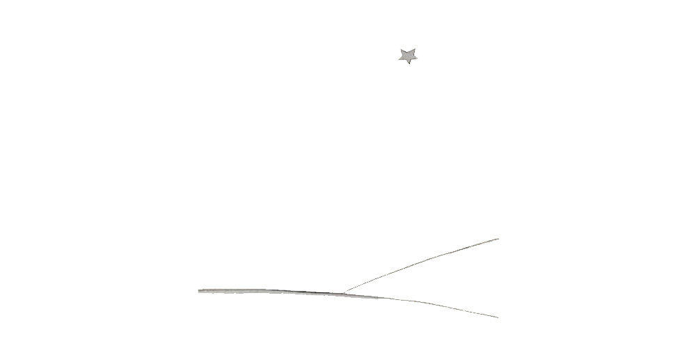

Chapter 27
And now six years have already gone by...
I have never yet told this story. The companions who met me on my return were well content to see me alive. I was sad, but I told them: "I am tired."
Now my sorrow is comforted a little. That is to say−− not entirely. But I know that he did go back to his planet, because I did not find his body at daybreak. It was not such a heavy body... and at night I love to listen to the stars. It is like five hundred million little bells...
But there is one extraordinary thing... when I drew the muzzle for the little prince, I forgot to add the leather strap to it. He will never have been able to fasten it on his sheep. So now I keep wondering: what is happening on his planet? Perhaps the sheep has eaten the flower...
At one time I say to myself: "Surely not! The little prince shuts his flower under her glass globe every night, and he watches over his sheep very carefully..." Then I am happy. And there is sweetness in the laughter of all the stars.
But at another time I say to myself: "At some moment or other one is absent−minded, and that is enough! On some one evening he forgot the glass globe, or the sheep got out, without making any noise, in the night..." And then the little bells are changed to tears...
Here, then, is a great mystery. For you who also love the little prince, and for me, nothing in the universe can be the same if somewhere, we do not know where, a sheep that we never saw has−− yes or no?−− eaten a rose...
Look up at the sky. Ask yourselves: is it yes or no? Has the sheep eaten the flower? And you will see how everything changes...
And no grown−up will ever understand that this is a matter of so much importance!

This is, to me, the loveliest and saddest landscape in the world. It is the same as that on the preceding page, but I have drawn it again to impress it on your memory. It is here that the little prince appeared on Earth, and disappeared.
Look at it carefully so that you will be sure to recognise it in case you travel some day to the African desert. And, if you should come upon this spot, please do not hurry on. Wait for a time, exactly under the star. Then, if a little man appears who laughs, who has golden hair and who refuses to answer questions, you will know who he is. If this should happen, please comfort me. Send me word that he has come back.